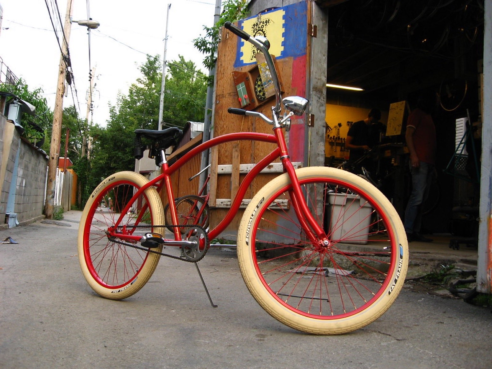

This is the map of how it happened — and why no city has repeated it since.
The neighborhood: why Mile End?
Cheap rent is the boring answer, and it's true: in the early 2000s, Mile End's cold-water flats ran a fraction of Toronto or New York prices. But three other ingredients made the rent matter:
- The infrastructure already existed. Godspeed You! Black Emperor had pioneered Montreal DIY from the mid-90s, founding Constellation Records (1997) and proving the city could sustain uncompromising music. The Mainline Rock 'n' Roll stage and cheap rehearsal spaces came next.
- The bars cooperated. Casa del Popolo and its sister venue La Sala Rossa opened in 2000 as artist-run spaces — vegetarian café by day, venue by night — and became the scene's living room. Shows were cheap, all-ages friendly, and gloriously mixed-bill.
- The language math. Montreal's francophone majority meant Anglo indie musicians were a self-selecting fringe — weird by definition, freed from industry expectations, and cross-pollinated by francophone acts like Malajube who shared stages and members.

The explosion, year by year
2001–2003: The strange begins
The Unicorns — keyboard-driven, unhinged, heartbreaking — release Who Will Cut Our Hair When We're Gone? (2003) and immediately become the continent's favorite cult band. The Stills arrive with Logic Will Break Your Heart (2003), post-punk made beautiful. Both bands tour relentlessly out of Montreal, seeding the legend.
2004: Funeral
Arcade Fire's debut arrives via Merge Records and detonates. Funeral is a communal masterpiece — orchestration by committee, grief transmuted into anthems — and its success rewrites indie economics: a Montreal band can top year-end lists, sell out theatres, and still live on the Main. Win Butler and Régine Chassagne (Montreal-born, Haitian heritage) make the band a bilingual, binational symbol.
2005: The Montreal template goes continental
Wolf Parade's Apologies to the Queen Mary (Sub Pop) — Spencer Krug and Dan Boeckner's twin-songwriter engine — follows Funeral's path. Suddenly every A&R scout has a Montreal hotel bill. The city briefly rivals Brooklyn as indie rock's capital of hype, at a fraction of the cost.
2006–2008: Francophone pride, Anglophone ears
Malajube's Trompe-l'œil (2006) becomes a Polaris Prize shortlist phenomenon — a fully francophone rock record embraced by Anglo critics who didn't need to understand every word. Plants and Animals' Parc Avenue (2008) documents the neighborhood itself; Patrick Watson wins the 2007 Polaris for Close to Paradise, cementing the "Montreal = ambitious" brand.
2009–2010: The peak that changed the Grammys
Arcade Fire's The Suburbs (2010) wins the Grammy for Album of the Year — the indie world's single greatest establishment shock. Montreal's decade ends the way it began: with a record that proved the underground could be the biggest thing on earth.
The scene's secret: it was a system
What made Montreal different wasn't talent density (every city has talented people) — it was feedback loops:
- Bands shared members (Krug played in Sunset Rubdown and Frog Eyes; Boeckner later in Handsome Furs; The Unicorns splintered into Islands and Mister Heavenly).
- Venues took chances because rent allowed it; audiences came because shows cost less than dinner.
- Labels (Constellation, then others) stayed local, keeping infrastructure and money in the city.
- Bilingualism meant two scenes fed each other — francophone chanson experimentalism and Anglo indie — instead of competing.
Toronto eventually absorbed some of the energy; Brooklyn priced itself out of ever copying it. The Mile End model remains the great un-replicated experiment of 21st-century indie rock.
The legacy in five records
If you want the explosion in a weekend: Funeral (Arcade Fire), Apologies to the Queen Mary (Wolf Parade), Who Will Cut Our Hair When We're Gone? (The Unicorns), Trompe-l'œil (Malajube), Parc Avenue (Plants and Animals). Then go find what Godspeed built the house with.
Frequently asked questions
When was the Montreal indie explosion?
Roughly 2001–2010, peaking with Arcade Fire's Funeral (2004), Wolf Parade's Apologies to the Queen Mary (2005), and Arcade Fire's Grammy win for The Suburbs (2011, for a 2010 album).
Why did so many indie bands come from Mile End?
Cheap rent, existing infrastructure (Constellation Records, Casa del Popolo), and a bilingual artist fringe that shared stages and members across French and English scenes.
Is the Montreal indie scene still active?
Yes — the venues, labels, and cross-pollination continue, with newer waves spanning genres (Grimes and the Arbutus Records electronic scene emerged from the same soil). The economics have tightened, but the ecosystem persists.